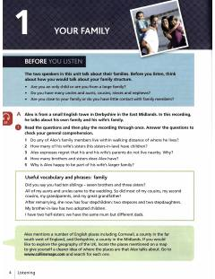

CEB1 darajasi uchun ingliz tilida tinglab tushunish ko'nikmalarini rivojlantiruvchi darslik.
Ushbu o'quv qo'llanma B1 (Intermediate) darajasidagi o'quvchilar uchun ingliz tilida tinglab tushunish ko'nikmalarini rivojlantirishga mo'ljallangan. Kitobda kundalik hayotiy vaziyatlar, oilaviy munosabatlar va turli shevalardagi nutqlarni tushunish bo'yicha amaliy mashqlar va lug'atlar berilgan. Collins 'English for Life' seriyasining bir qismi sifatida real muloqot muhitini yaratishga xizmat qiladi.